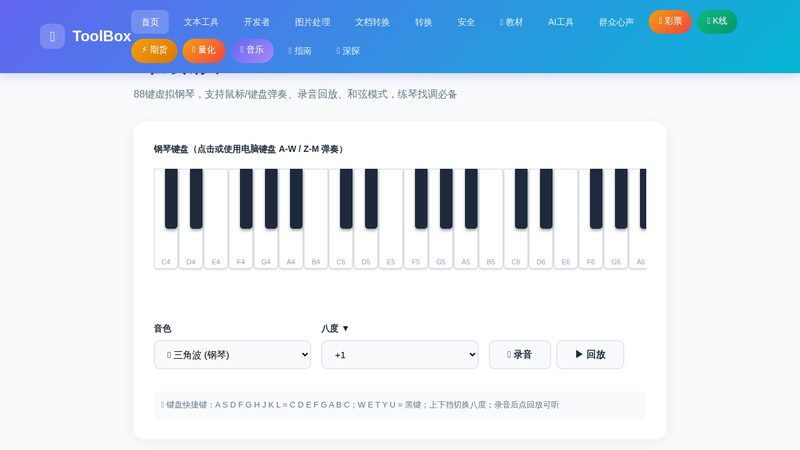
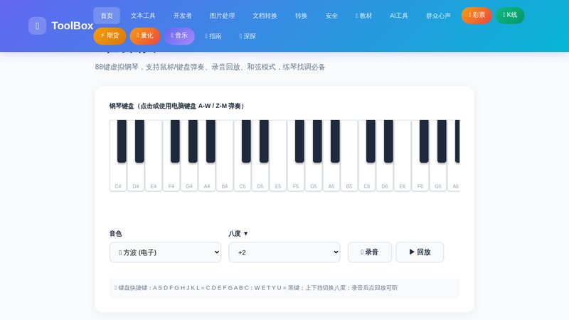
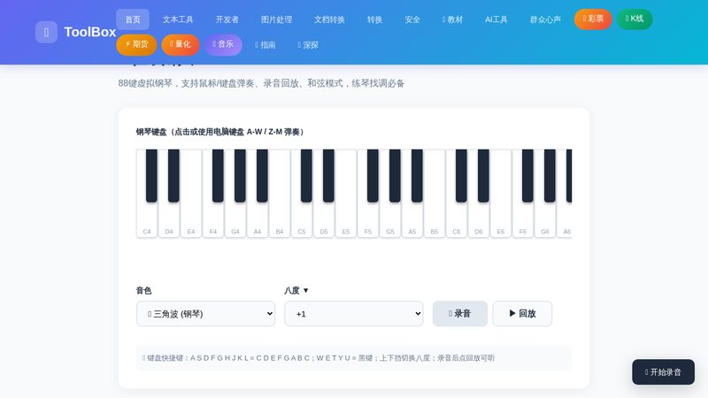

在线钢琴：无需乐器，打开浏览器就能练琴找调
想弹琴但身边没有乐器？想快速找调、练练手型、或者给朋友哼一段旋律？在线钢琴把 88 键的虚拟琴键直接搬进浏览器——鼠标点击就能出声，电脑键盘也能弹，还支持录音回放。下面是完整的使用指南。

开始使用
1
打开在线钢琴工具
进入首页后，点击「趣味工具」分类，找到「🎹 在线钢琴」并打开。页面会显示一排完整的钢琴键盘——白键和黑键排列整齐，就像一架真实的钢琴。
2
用鼠标或键盘弹奏
直接用鼠标点击琴键即可发声。更顺手的方式是用电脑键盘：A S D F G H J K L 对应 C D E F G A B C（白键），W E T Y U 是黑键。想弹更高的音域？在「八度」下拉框把音域调高，键盘位置不变，音高就整体上移。

💡 默认是柔和的三角波钢琴音色。想玩电子音？把音色切换成「方波」或「锯齿波」，立刻变成合成器效果。
3
录音与回放
即兴弹了一段好听的旋律？点击「🔴 录音」开始记录，弹完后再次点击停止，然后点「▶️ 回放」——刚刚的演奏就会完整重现。特别适合反复练习同一段乐句，或者录下来对比自己的进步。

💡 小技巧：先用「点按测速」找到稳定速度，再配合节拍器工具一起练，节奏感提升超快。
使用场景
- 🎵 临时找调 — 听到一段旋律想扒谱，用钢琴一个音一个音试出来，比哼唱靠谱得多。
- 🧒 音乐启蒙 — 给孩子认识 Do-Re-Mi、练手眼协调，零成本体验弹琴的乐趣。
- ✍️ 创作 Demo — 随手弹旋律并录音回放，攒下创作灵感，不用等手边有真乐器。
- 🎤 唱歌校准 — 用钢琴给出标准音高，跟琴练唱，跑调立刻能听出来。
- 🕹️ 纯娱乐 — 无聊时弹两下《小星星》或《欢乐颂》，键盘就是你的乐器。
常见问题
手机/平板上能用吗？
可以。触屏设备直接点琴键就能发声，无需外接键盘。建议平板横屏使用，键盘显示更完整。
怎么让音更高/更低？
用「八度」下拉框调整（-1 到 +3）。调高八度后，键盘按键不变但整体音域上移，可以覆盖不同音区的练习需求。
录音能保存成文件吗？
当前版本录音支持实时回放练习，支持音色/八度调整；如需把音频导出为文件，可以用站内的「音频录制」工具辅助。